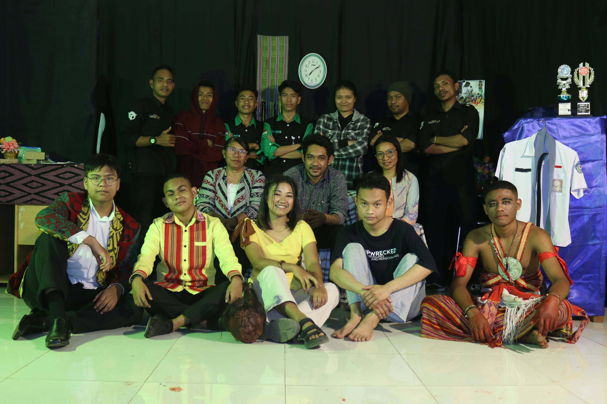

=== Abil's Blog ===
Updates from My Journey
FLS2N Solo Guitar 2022: The Struggle at the Provincial Level

FLS2N 2022.
Back in 2022, when I was still in high school, I participated in
FLS2N 2022
in the Solo Guitar category. This is one of my favorite hobbies—playing
the guitar to unwind. I passed the district-level selection and advanced
to the provincial level in East Nusa Tenggara.
The preparation was quite intense. I practiced every day, chose a song
that showcased both technique and emotion, and performed in front of the
judges in August 2022. I felt proud to represent my school.
Unfortunately, I didn't make it to the nationals because the competition
was incredibly tough. Only the provincial 1st-place winner advanced, and
I had to admit my skills weren't quite enough to go further.
Though I didn’t reach the nationals, this experience enriched my musical
journey.
See My Performance Video